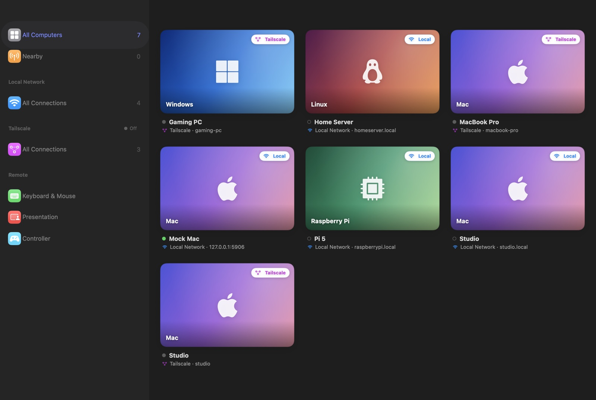
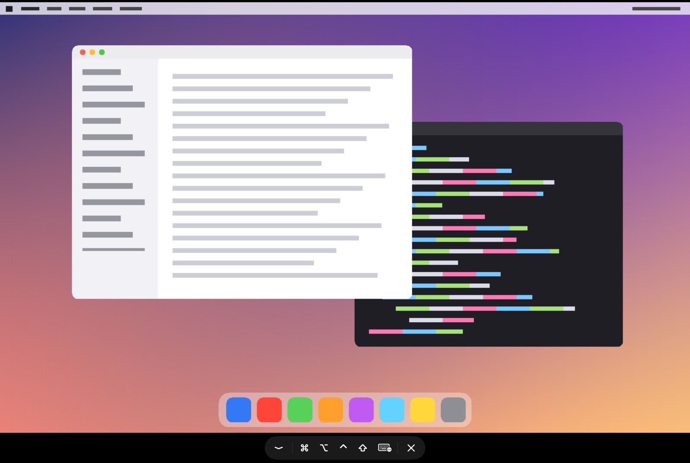
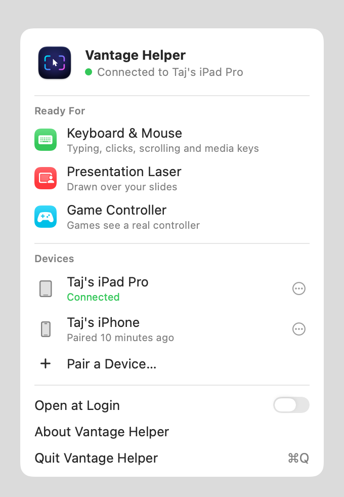
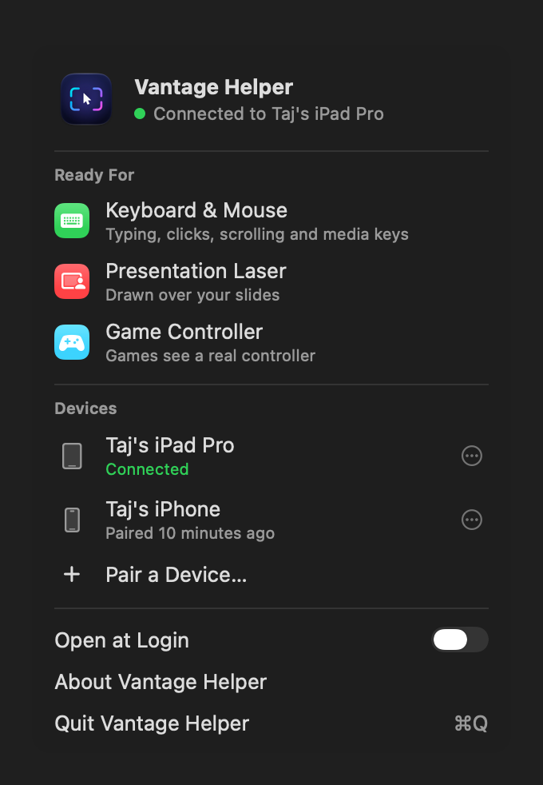
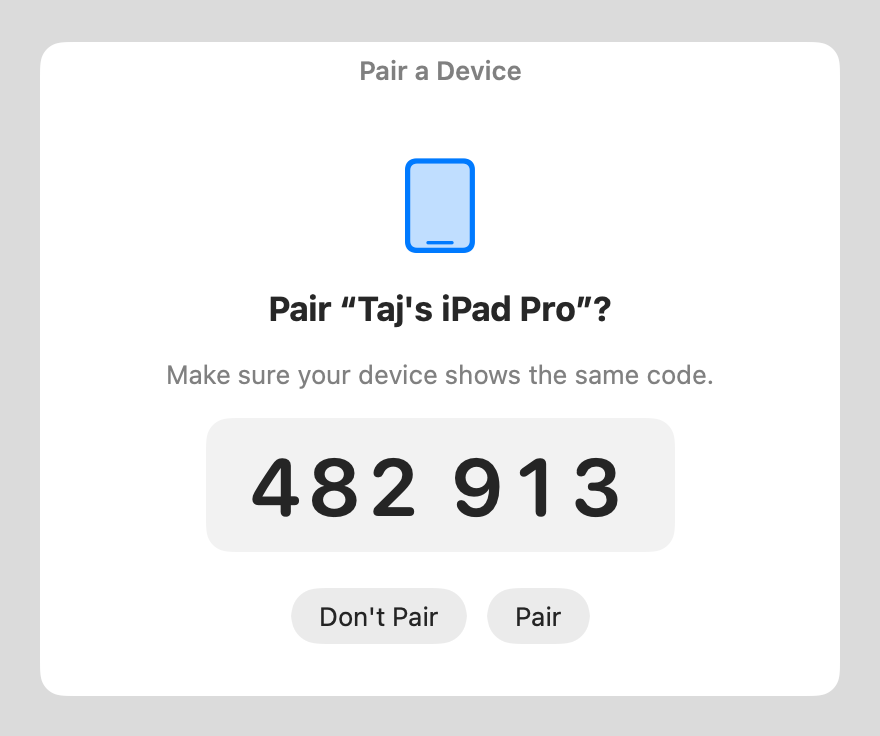
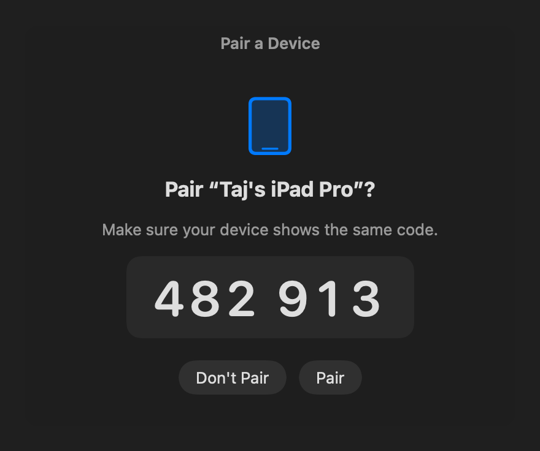

The same library, the same fast sessions, now in a Mac window.

Your computers are a click away, with Tailscale built in. Your Mac's keyboard, mouse and trackpad drive the other computer.

An optional menu-bar app for the Mac you're controlling. Vantage works without it. With it, the remotes get the parts Screen Sharing can't carry.




Vantage is in a small private beta on TestFlight. Send a note and you'll get an invite.